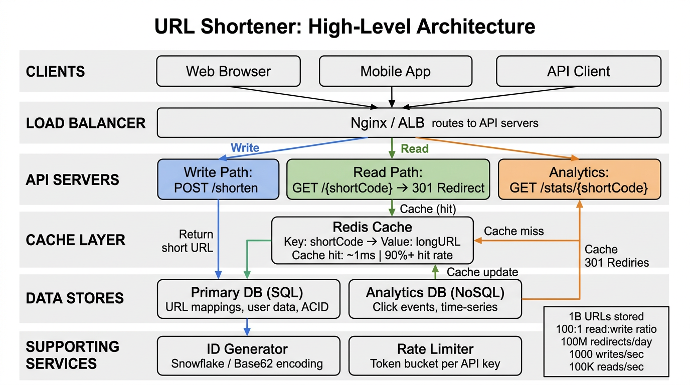
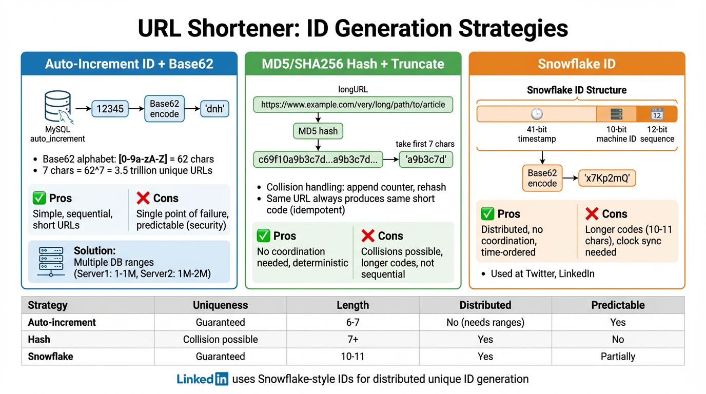
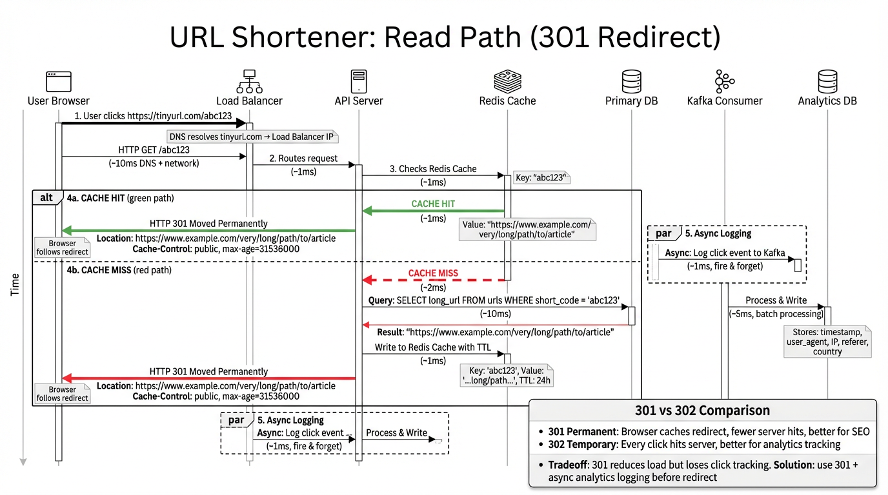
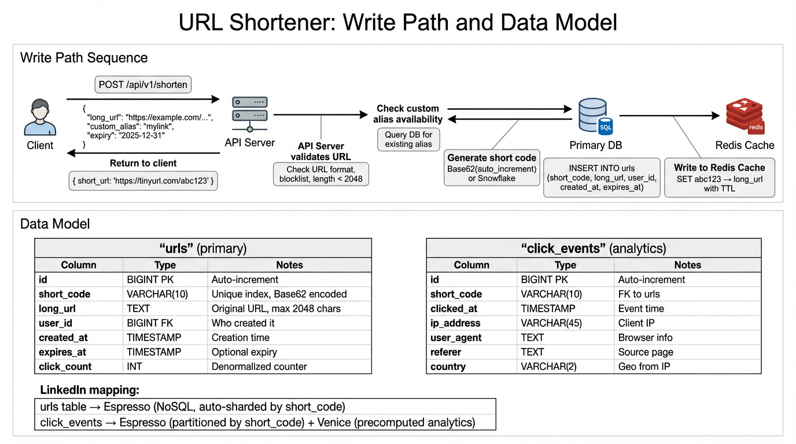
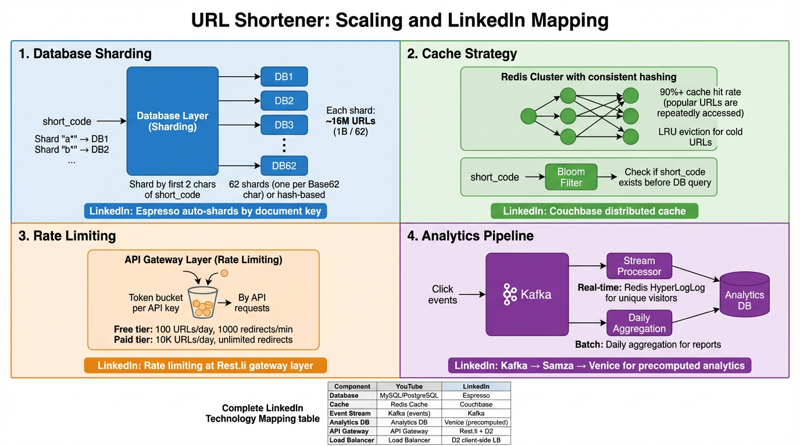

Section 1
Overview & Scale Requirements
A URL shortener converts long URLs into short, memorable links and redirects users to the original destination. Services like bit.ly and TinyURL handle billions of redirects daily. The system must balance write throughput (creating short links) with massively higher read throughput (redirecting clicks).
<100ms
Redirect Latency Target

Figure 1: High-Level Architecture — End-to-end flow from clients to data stores and supporting services
Diagram Walkthrough: High-Level Architecture
- Clients: Web browsers, mobile apps, and API consumers send requests to create short URLs or follow shortened links. Each request carries an API key for rate limiting and analytics attribution.
- Load Balancer: Distributes incoming traffic across multiple API server instances using consistent hashing or round-robin. Performs SSL termination and health checking. Separates read traffic (GET /:shortCode) from write traffic (POST /api/shorten).
- API Servers — Write Path: Handles URL creation requests. Validates the long URL, checks for custom alias conflicts, generates a unique short code via the ID generation service, persists the mapping to the database, and populates the cache. Returns the shortened URL to the client.
- API Servers — Read Path: Handles redirect requests. Looks up the short code in the cache first (Redis). On cache hit, returns an immediate 301 redirect. On cache miss, queries the database, populates the cache, then redirects. Fires an async click event to Kafka.
- API Servers — Analytics Path: Serves dashboards and API queries for click counts, geographic distribution, referrer breakdown, and time-series data. Reads from the analytics database populated by stream processors.
- Cache (Redis): Stores the hottest short-code-to-URL mappings in memory. With a 90%+ hit rate, the vast majority of redirects never touch the database. Uses LRU eviction and consistent hashing for cluster distribution.
- Data Stores: The primary database (MySQL/PostgreSQL) stores the URL mappings and user data. A separate analytics store holds click event aggregations. Blob storage holds any preview screenshots or QR code images.
- Supporting Services: Kafka ingests click events asynchronously. Stream processors aggregate analytics in real-time. A background cleanup job expires old URLs. A URL safety scanner checks for malicious destinations.
Functional Requirements
Core Features
- Shorten URL: Given a long URL, generate a unique short URL (e.g.,
https://short.ly/aB3x9Kz)
- Redirect: When a user visits the short URL, redirect them to the original long URL with minimal latency
- Custom Aliases: Allow users to choose a custom short code (e.g.,
short.ly/my-brand) subject to availability
- Expiration: URLs can have an optional time-to-live (TTL) after which they become inactive
- Analytics: Track click counts, geographic origin, referrer, device type, and time-series patterns per short URL
Non-Functional Requirements
Low Latency
Redirects must complete in <100ms p99. Users clicking short links expect near-instant page loads. Cache-hit redirects target <10ms.
High Availability
The service must be 99.99% available. A short link that doesn't work erodes trust immediately. Multi-region deployment with failover.
Not Predictable
Short codes must not be guessable or sequential. An attacker should not be able to enumerate all stored URLs by incrementing an ID.
Scalable
Must handle 100K reads/sec with room to grow 10x. Horizontal scaling of read path. Database sharding for write distribution.
LinkedIn Technology Mapping
| Generic Component | LinkedIn Equivalent | Rationale |
|---|
| MySQL / PostgreSQL | Espresso | LinkedIn's distributed NoSQL store with auto-sharding, used for high-throughput key-value lookups like URL mappings |
| Redis | Couchbase | LinkedIn's distributed caching layer for sub-millisecond reads; replaces Redis for URL mapping cache |
| Kafka | Kafka | LinkedIn invented Kafka — same technology for click event streaming and analytics pipelines |
| API Gateway | Rest.li + D2 | Rest.li provides the declarative REST framework; D2 handles dynamic service discovery and load balancing |
| Stream Processor | Samza | LinkedIn's stream processing framework for real-time click analytics aggregation |
| Analytics DB | Venice | LinkedIn's read-optimized derived data store for precomputed analytics views |
Section 2
ID Generation Strategies
The heart of a URL shortener is how it generates unique, compact short codes. Three main strategies exist, each with distinct tradeoffs around uniqueness guarantees, coordination requirements, and predictability.
2.1 Auto-Increment + Base62 Encoding
How Base62 Works
Base62 uses the character set [0-9a-zA-Z] — 62 characters total. A 7-character Base62 string encodes 627 = 3.5 trillion unique values. Even with 1 billion URLs stored, we've used less than 0.03% of the space.
Encoding: Take an auto-incremented integer ID (e.g., 123456789) and repeatedly divide by 62, mapping remainders to the character set. Result: 8M0kX. Decoding reverses the process.
Pros
- Guaranteed unique (database auto-increment)
- Simple implementation
- Short codes (7 chars handles trillions)
- No collision handling needed
Cons
- Sequential IDs are predictable — attackers can enumerate URLs
- Single point of failure if using one DB sequence
- Distributed auto-increment requires coordination (Zookeeper range allocation)
- Reveals creation order
2.2 MD5/SHA256 Hash + Truncate
Hash-Based Generation
Compute MD5(longURL) or SHA256(longURL), then take the first 7 characters (after Base62 encoding the hash bytes). This produces a deterministic mapping — the same long URL always generates the same short code.
Collision handling: Truncating a 128-bit hash to ~43 bits makes collisions likely by the birthday paradox. When a collision is detected (short code already exists for a different long URL), append a counter or re-hash with a salt: MD5(longURL + "1"), MD5(longURL + "2"), etc.
Pros
- No coordination between servers
- Same URL always gets same short code (deduplication)
- Not sequential or predictable
- Stateless generation
Cons
- Collisions require retry logic and DB lookups
- Collision rate grows as database fills
- Fixed-length truncation limits uniqueness
- Custom aliases don't fit this model
2.3 Snowflake ID
Snowflake Structure (64 bits)
Originally designed by Twitter, a Snowflake ID packs uniqueness into a 64-bit integer with three components:
| 1 bit unused | 41 bits: timestamp (ms) | 10 bits: machine ID | 12 bits: sequence |
| 0 | ~69 years range | 1024 machines | 4096 per ms/node |
Throughput: Each machine generates up to 4,096 IDs per millisecond — with 1,024 machines, that's 4 million IDs/sec globally. The timestamp prefix means IDs are roughly time-ordered, which improves database write performance (sequential inserts into B-tree indexes).
Pros
- No coordination — each machine generates independently
- Globally unique by construction
- Roughly time-ordered (good for DB indexing)
- High throughput (4M IDs/sec cluster-wide)
Cons
- 64 bits → 11 Base62 chars (longer than hash approach)
- Requires machine ID assignment (via Zookeeper or config)
- Clock skew can cause issues (requires NTP sync)
- Timestamp leaks creation time
Strategy Comparison
| Strategy | Uniqueness | Coordination | Predictable? | Code Length | Collision Risk |
|---|
| Auto-Increment + Base62 | Guaranteed | High (DB sequence) | Yes | 5–7 chars | None |
| MD5 Hash + Truncate | Probabilistic | None | No | 7 chars (fixed) | High (birthday paradox) |
| Snowflake ID + Base62 | Guaranteed | Low (machine ID only) | Partially | 11 chars | None |

Figure 2: ID Generation Strategies — Auto-Increment vs Hash vs Snowflake approaches
Diagram Walkthrough: ID Generation Strategies
- Auto-Increment Path: The API server requests the next ID from a centralized counter (database sequence or Zookeeper-managed range). The integer ID is converted to Base62 to produce a compact short code. This path is the simplest but creates a single point of contention — all servers compete for the next number in the sequence.
- Hash Path: The API server computes a hash of the long URL locally — no network call needed. The hash is truncated and Base62-encoded. Before writing, the server must check the database for collisions. If the short code already maps to a different URL, it re-hashes with a salt and retries. Each retry costs an additional database read.
- Snowflake Path: Each API server has a pre-assigned machine ID (from configuration or Zookeeper). The server combines the current timestamp, its machine ID, and a local sequence counter into a 64-bit integer. No network call or database check needed — uniqueness is guaranteed by construction. The 64-bit ID is Base62-encoded into an 11-character short code.
- Recommended Hybrid: Use Snowflake for ID generation (no coordination, guaranteed unique) but truncate to 7 characters by taking the lower 43 bits. Accept the theoretical collision risk (~1 in 8 trillion) and handle it with a retry on unique constraint violation. This gives you compact codes without sequential predictability.
LinkedIn Approach: LinkedIn uses Snowflake-style distributed IDs for many internal services. Each data center has ID generator instances with pre-assigned machine IDs, coordinated through Zookeeper. The Snowflake approach aligns with LinkedIn's philosophy of stateless, horizontally scalable microservices.
Section 3
Read Path (301 Redirect)
The read path handles the core use case: a user clicks a short link and gets redirected to the original URL. Since reads outnumber writes 100:1, this path must be optimized for sub-100ms latency and 100K+ requests per second.
Full Redirect Sequence
- User clicks
https://short.ly/aB3x9Kz in a browser, email, or social media post
- DNS resolution maps
short.ly to the load balancer's IP address
- Load Balancer routes the GET request to an available API server
- API Server extracts the short code
aB3x9Kz from the URL path
- Redis Cache Check: Look up
aB3x9Kz in the cache
- Cache HIT (~1ms): Return
301 Redirect with the cached long URL. Fire async click event to Kafka.
- Cache MISS: Query the primary database for the short code mapping
- Database Query:
SELECT long_url FROM urls WHERE short_code = 'aB3x9Kz' AND (expires_at IS NULL OR expires_at > NOW())
- Populate Cache: Write the mapping to Redis with a TTL (e.g., 24 hours) for future requests
- Return 301: Send the
301 Moved Permanently response with Location: https://original-long-url.com/path

Figure 3: Read Path — From user click to 301 redirect with cache-first strategy
Diagram Walkthrough: Read Path
- Client Request (Step 1): The user's browser sends a GET request for the short URL. The DNS lookup and TCP handshake add ~20–50ms for a cold connection. With HTTP keep-alive and DNS caching, subsequent requests are faster.
- Load Balancer (Step 2): The request hits the load balancer, which adds ~1ms of latency. It selects an API server via round-robin or least-connections. Health checks ensure only healthy servers receive traffic.
- Cache Lookup (Step 3): The API server checks Redis first. A cache hit returns the long URL in under 1ms. With a 90%+ hit rate (popular links are clicked repeatedly), the vast majority of redirects complete in under 10ms total.
- Database Fallback (Step 4): On cache miss, the server queries the primary database. A B-tree index on
short_code makes this lookup O(log n) — about 5–10ms even with 1 billion rows. The result is written to Redis before returning.
- Async Analytics (Step 5): Before returning the 301, the server publishes a click event to Kafka containing the short code, timestamp, IP address, user-agent, and referer header. This is non-blocking — the redirect doesn't wait for Kafka acknowledgment.
- 301 Response (Step 6): The server returns HTTP 301 with the
Location header set to the long URL. The browser follows the redirect and loads the destination page.
301 vs 302 Tradeoff
The choice between 301 Moved Permanently and 302 Found has significant implications for caching, analytics, and SEO.
301 Moved Permanently
- Browser caches the redirect — future clicks don't hit the server at all
- Reduces server load dramatically for popular links
- Better for SEO — search engines transfer page rank to the destination
- Lower infrastructure costs at scale
302 Found (Temporary)
- Browser always hits the server — every click is counted
- More accurate real-time analytics
- Can change the destination URL later
- Higher server load (every click = full round trip)
Recommended Solution: 301 + Async Analytics
Use 301 for performance but log click events asynchronously to Kafka before returning the redirect. The first click for each user-link pair always hits the server and gets logged. Subsequent clicks from the same browser are cached at the browser level (no server hit), but these represent diminishing analytical value. For precise click-through rates, augment with client-side tracking pixels.
Async Analytics Logging
Click Event Pipeline
Every redirect fires an async event to Kafka before returning the 301. The event contains:
{
"short_code": "aB3x9Kz",
"timestamp": "2024-01-15T10:30:00Z",
"ip_address": "203.0.113.42",
"user_agent": "Mozilla/5.0 (iPhone; iOS 17.2)",
"referer": "https://twitter.com/status/123",
"country": "US",
"city": "San Francisco"
}
A Samza stream processor consumes these events, aggregates them into per-minute/hour/day buckets, and writes the results to the analytics database. Dashboard queries read from pre-aggregated tables, not raw events.
Section 4
Write Path & Data Model
The write path handles URL creation — validating input, generating a unique short code, persisting the mapping, and returning the shortened URL. While writes are 100x less frequent than reads, they must be durable and consistent.
URL Creation Flow
- Validate: Check that the long URL is well-formed (valid scheme, reachable host). Reject malicious or blocked domains. Enforce maximum URL length (2,048 chars).
- Check Custom Alias: If the user requested a custom alias (e.g.,
my-brand), check uniqueness against the database. Return HTTP 409 Conflict if already taken.
- Generate Short Code: If no custom alias, generate a unique short code using the chosen ID generation strategy (Snowflake + Base62 recommended).
- Write to Database: Insert the mapping
(short_code, long_url, user_id, created_at, expires_at) into the primary database. The short_code column has a unique index.
- Write to Cache: Populate Redis with the mapping so the first redirect is a cache hit. Set TTL matching the URL's expiration or a default (e.g., 24 hours).
- Return Response: Return HTTP 201 with the full short URL:
{ "short_url": "https://short.ly/aB3x9Kz", "expires_at": "2025-01-15T00:00:00Z" }

Figure 4: Write Path — URL creation flow and data model schema
Diagram Walkthrough: Write Path & Data Model
- API Request (Step 1): The client sends a POST request with the long URL, optional custom alias, optional expiration time, and API key. The API key identifies the user for rate limiting and analytics attribution.
- Validation (Step 2): The server validates the URL format, checks against a blocklist of malicious domains, and verifies the user's rate limit hasn't been exceeded. Invalid requests are rejected with descriptive error codes.
- ID Generation (Step 3): For auto-generated codes, the Snowflake ID generator produces a 64-bit unique ID which is Base62-encoded to 7 characters. For custom aliases, the server checks uniqueness with a SELECT query before proceeding.
- Database Write (Step 4): The URL mapping is inserted into the
urls table. The unique index on short_code acts as a final safeguard against duplicates. On unique constraint violation (rare with Snowflake), the server retries with a new ID.
- Cache Population (Step 5): The mapping is written to Redis immediately after the database write succeeds. This ensures the first redirect attempt gets a cache hit rather than falling through to the database.
- Response (Step 6): The server returns the complete short URL along with metadata (creation time, expiration, short code). The client can immediately share this link.
Data Model Schema
urls Table
| Column | Type | Description |
|---|
id | BIGINT (PK) | Auto-increment primary key for internal reference |
short_code | VARCHAR(16) UNIQUE | The generated or custom short code, indexed for O(log n) lookups |
long_url | VARCHAR(2048) | The original destination URL |
user_id | BIGINT | Foreign key to the user who created the link |
created_at | TIMESTAMP | Creation timestamp, used for analytics and cleanup |
expires_at | TIMESTAMP NULL | Optional expiration; NULL means the link never expires |
click_count | BIGINT DEFAULT 0 | Denormalized click counter, updated periodically from analytics |
click_events Table
| Column | Type | Description |
|---|
id | BIGINT (PK) | Auto-increment primary key |
short_code | VARCHAR(16) | Foreign key to the URL that was clicked |
clicked_at | TIMESTAMP | When the click occurred, partitioned by day for efficient queries |
ip_address | VARCHAR(45) | Client IP for geo-location (supports IPv6) |
user_agent | VARCHAR(512) | Browser/device identification string |
referer | VARCHAR(2048) | The page the user clicked from (Twitter, email, etc.) |
country | CHAR(2) | ISO country code derived from IP geo-lookup |
LinkedIn Data Store Mapping
LinkedIn Implementation:
urls table → Espresso — Auto-sharded by short_code hash. Espresso provides strongly consistent reads with sub-5ms latency at LinkedIn scale. Each shard handles ~16M URLs.click_events table → Espresso for raw events + Venice for precomputed aggregations. Venice serves read-heavy analytics dashboards from materialized views updated by Samza stream processors.
Section 5
Scaling & Deep Dive
With 1 billion URLs and 100K reads/sec, the system must scale both the data layer and the caching layer. This section covers database sharding, cache architecture, rate limiting, analytics pipelines, and URL expiration.
5.1 Database Sharding
Sharding by Short Code Prefix
Partition URLs across 62 shards based on the first character of the short code. Since Base62 uses [0-9a-zA-Z], the first character naturally distributes across 62 buckets. Each shard holds ~16 million URLs (1B / 62).
Why prefix-based? The read path only needs the short code to locate the correct shard — no cross-shard queries. The short code itself encodes the shard key, eliminating the need for a separate routing table.
Advantages
- Deterministic routing from short code alone
- Even distribution (Base62 chars are uniformly generated)
- No cross-shard queries for reads or writes
- Easy to add more shards by splitting on two-character prefix (62² = 3,844 shards)
Considerations
- Custom aliases may cause uneven shard distribution
- Resharding requires data migration
- Analytics queries that span all URLs need scatter-gather
- Backup/restore granularity is per-shard
5.2 Cache Strategy
Redis Cluster Architecture
A Redis Cluster with consistent hashing distributes cached URL mappings across multiple nodes. Target metrics:
- Hit rate: 90%+ (popular links are clicked repeatedly, Zipf distribution)
- Eviction policy: LRU (Least Recently Used) — unpopular links age out naturally
- TTL: 24-hour default, matching URL expiration when set
- Cluster size: ~50GB total for 100M cached mappings (avg 500 bytes each)
Bloom Filter for Non-Existent URLs
A Bloom filter in front of the database catches lookups for short codes that don't exist. Without it, every 404 request (invalid short link) would query the database. The Bloom filter uses ~1GB of memory for 1B URLs with a 1% false positive rate. On a Bloom filter negative, return 404 immediately without touching the database.
5.3 Rate Limiting
Token Bucket per API Key
Each API key gets a token bucket with configurable fill rate and burst capacity:
| Plan | Create URLs/min | Redirects/min | Burst |
|---|
| Free | 10 | 1,000 | 2x |
| Pro | 100 | 10,000 | 5x |
| Enterprise | 1,000 | 100,000 | 10x |
Rate limit state is stored in Redis with atomic INCR and EXPIRE commands. Distributed rate limiting across API servers uses a shared Redis counter per API key.
5.4 Analytics Pipeline
Click Event Processing
Click events flow through a three-stage pipeline:
- Ingest: API servers publish click events to a Kafka topic (
click-events) with short code as the partition key. This ensures all clicks for the same URL land on the same partition for ordered processing.
- Process: Samza stream processors consume events and compute real-time aggregations: per-minute click counts, unique visitors (HyperLogLog), country distribution, and referrer breakdown.
- Serve: Aggregated results are written to Venice (read-optimized store). Analytics API queries read from Venice, serving dashboard data in <10ms.
5.5 URL Expiration
Background Cleanup Job
A cron-based job scans for expired URLs every hour: DELETE FROM urls WHERE expires_at < NOW(). Runs during off-peak hours. Deletes in batches of 1,000 to avoid long-running transactions. Removes corresponding cache entries.
Lazy Deletion on Access
When a redirect request hits an expired URL, the server returns 410 Gone instead of redirecting. The expired mapping is deleted from both cache and database on this access. Combines with background job for comprehensive cleanup.

Figure 5: Scaling Architecture — Sharding, caching, rate limiting, and analytics pipeline
Diagram Walkthrough: Scaling Architecture
- Database Sharding Layer: The 62-shard setup distributes URLs by short code prefix. Each shard is a MySQL/Espresso partition with its own primary and read replicas. The routing layer uses the first character of the short code to deterministically select the shard — no lookup table needed.
- Redis Cache Cluster: Consistent hashing distributes cached mappings across Redis nodes. When a node fails, its key range is absorbed by neighbors on the hash ring. The Bloom filter sits in front of the database (not the cache) and prevents unnecessary DB queries for non-existent short codes.
- Rate Limiter: The token bucket implementation uses Redis atomic operations. Each API request decrements the bucket; the bucket refills at the plan's configured rate. When the bucket is empty, the API returns HTTP 429 Too Many Requests with a
Retry-After header.
- Analytics Pipeline: Click events flow from API servers → Kafka → Samza → Venice. The Kafka topic is partitioned by short code, ensuring all clicks for one URL are processed in order by the same Samza task. Venice materializes per-URL, per-hour, and per-day aggregation tables.
- Expiration Cleanup: The background job runs hourly, scanning the
expires_at index. It deletes in batches of 1,000 with a 100ms sleep between batches to avoid overwhelming the database. The lazy deletion on read access handles the gap between cleanup runs.
Full LinkedIn Technology Mapping
| Component | Generic Tech | LinkedIn Equivalent | Role |
|---|
| Primary Database | MySQL | Espresso | URL mapping storage, auto-sharded by short code |
| Cache | Redis | Couchbase | Sub-ms URL lookups, 90%+ hit rate |
| Message Queue | Kafka | Kafka | Click event ingestion, async processing |
| Stream Processing | Flink / Spark Streaming | Samza | Real-time click aggregation |
| Analytics Store | ClickHouse / Druid | Venice | Precomputed analytics views |
| API Framework | Spring Boot | Rest.li | RESTful API endpoints |
| Service Discovery | Consul / Eureka | D2 | Dynamic routing and load balancing |
| ID Generation | Twitter Snowflake | Distributed ID Service | Globally unique, time-ordered IDs |
| Rate Limiting | Redis + Lua | Couchbase Counters | Per-API-key token bucket |
| Configuration | Zookeeper | Zookeeper | Machine ID assignment, feature flags |
Section 6
Interview Questions & Talking Points
Common follow-up questions interviewers ask about URL shortener design, with structured answers and tradeoff analysis.
Q1: How do you handle custom aliases?
Answer: Custom aliases are checked for uniqueness at creation time with a SELECT query against the short_code unique index. If available, the alias is reserved immediately by inserting a row — there's no separate "reservation" step. The unique constraint prevents race conditions where two users request the same alias simultaneously (one INSERT succeeds, the other gets a constraint violation and returns 409 Conflict).
Additional considerations: Custom aliases should be validated for length (3–30 chars), allowed characters (alphanumeric + hyphens), and checked against a reserved words blocklist (e.g., api, admin, login).
Q2: How do you prevent malicious URLs?
Answer: Three layers of defense:
- Blocklist: Maintain a database of known malicious domains (updated from threat intelligence feeds). Check every URL at creation time against the blocklist.
- URL Scanning: For new or unknown domains, submit the URL to a scanning service (Google Safe Browsing API) asynchronously. Flag suspicious URLs for manual review before activating them.
- User Reporting: Provide a "Report this link" endpoint. After a threshold of reports (e.g., 5), deactivate the short link and queue it for review. Users who create multiple flagged URLs get their API key suspended.
Q3: How do you handle URL expiration?
Answer: Two complementary strategies:
- Background Job (Active): A scheduled job runs every hour, scanning the
expires_at index for URLs past their expiry. Deletes in batches to avoid DB strain. Also purges corresponding cache entries.
- Lazy Deletion (Passive): On every redirect request, check
expires_at before redirecting. If expired, return HTTP 410 Gone, delete from cache and database. This catches URLs that expired between cleanup runs.
Why both? The background job prevents unbounded database growth. Lazy deletion provides a better user experience (immediate 410 instead of redirect to a dead page). Together they ensure no expired URL persists longer than one cleanup cycle.
Q4: 301 vs 302 — which redirect code and why?
Choose 301 when:
- Performance and server cost matter most
- URLs are permanent (no destination changes)
- SEO link juice transfer is important
- Analytics can tolerate under-counting repeat visitors
Choose 302 when:
- Every single click must be counted precisely
- URL destinations may change after creation
- A/B testing different destinations
- Server load is not a concern
Recommended answer: "I'd use 301 for performance — browser caching eliminates repeat server hits — combined with async Kafka logging to capture the first click. For users who need precise per-click analytics, offer 302 as an opt-in flag at URL creation time."
Q5: How to generate globally unique short codes without coordination?
Answer: Use Snowflake IDs. Each server gets a unique 10-bit machine ID (1,024 possible machines) assigned via Zookeeper at startup. The server combines:
- 41-bit timestamp (current time in milliseconds) — provides rough ordering
- 10-bit machine ID — prevents cross-server collisions
- 12-bit sequence — handles burst within the same millisecond (4,096 IDs/ms)
The resulting 64-bit integer is Base62-encoded. No server needs to talk to another server or a central database to generate an ID. The only coordination is the one-time machine ID assignment. This gives 4 million IDs/second cluster-wide with zero coordination overhead per request.
Tradeoff Summary
Consistency vs Availability
URL creation requires strong consistency (no duplicate short codes). Redirects can tolerate eventual consistency (serving a slightly stale cache entry is acceptable). This maps to CP for writes, AP for reads — a common pattern in read-heavy systems.
Storage vs Compute
Denormalize click counts into the urls table (storage cost) to avoid expensive COUNT queries on the click_events table (compute cost). Pre-aggregate analytics in the stream processor (compute at write time) to serve dashboards instantly (no compute at read time).
Latency vs Accuracy
The 301 redirect sacrifices per-click accuracy for sub-10ms latency. The Bloom filter sacrifices 1% false positives for eliminating database queries on non-existent URLs. These are deliberate tradeoffs where the 99th percentile user experience matters more than perfect precision.
Simplicity vs Scalability
A single MySQL instance handles 1M URLs easily. At 1B URLs, you need sharding, caching, Bloom filters, and async analytics. The interview answer should start simple and scale up when the interviewer pushes on numbers — don't over-engineer from the start.